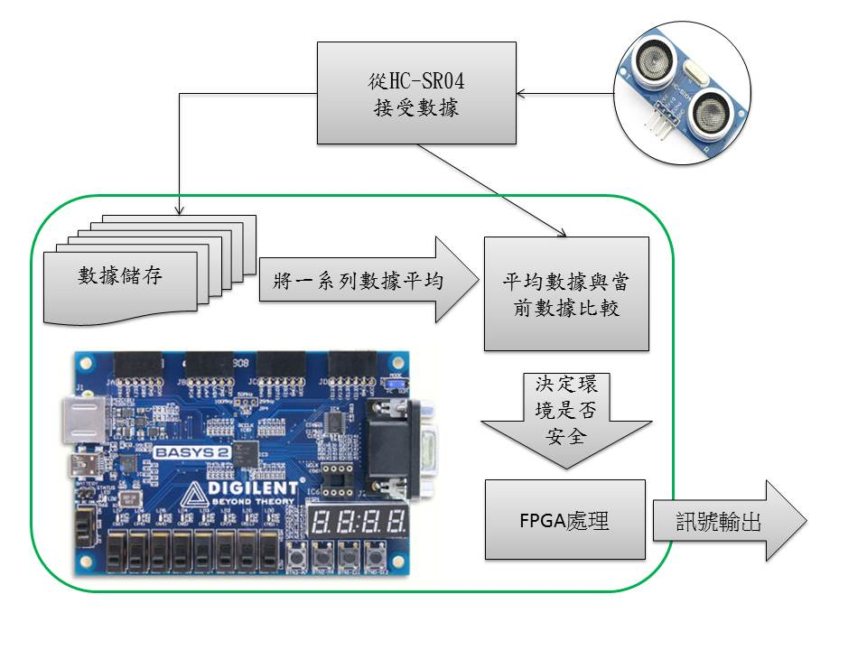

Introduction
Hello my name is Juh,Sin-Han
經歷
2015/5~2016/3 英業達股份有限公司 BIOS工程師
學歷
中原大學資訊工程學系學士(2015/01畢業)
大學專題
車用環境偵測器

自傳
2015年5月任職英業達，擔任商業NB部門BIOS工程師，工作內容是與客戶HP共同開發BIOS，並在公司中(如QA部門)與客戶HP之間擔任溝通的橋梁。我負責的專案是AMD系列BIOS開發，每天追蹤最新版livecode是否影響筆電功能運作失效，將QA部門回報的issue分類整理上傳至客戶端的系統上，並與客戶討論如何解決從中協助，在BIOS需要有重大的改版更新時，我負責文件編寫以及將code change update到SVN上。曾出差到大陸廠協助產線解決問題，幫助大陸廠、客戶和國內BIOS team三者之間的溝通。
在大學期間C語言的學習覺得寫程式的過程很有趣，有時候卡問題就會一直思考如何解決，常常熬夜想辦法解決問題。不僅是解決問題，還會去思考能不能讓程式碼更加簡練，可能是在一開始架構上將相似的功能的程式碼整合在一起變成一個函數，或是利用遞迴或是演算法的幫助讓程式碼看起來更簡短。
因為喜歡寫程式，所以希望工作內容能夠是開發專案，在待業期間研究了有關前後端產業，市面上很多產品如果再介面跟使用操作的流暢度再作優化我覺得會更好，相較於後端前端更能展現其成果在螢幕上，讓我覺得很有成就感。
希望藉由在工作專案上真實問題的解決能讓我累積更多實務經驗，在近期內能夠將基本技巧(html5,css)運用能夠更加熟練，在未來可以學習更多架構以解決更多的問題。